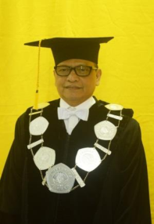
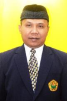

Struktur Organisasi
Pimpinan Universitas Jember
REKTOR
Drs. Moh Hasan, M.Sc., Ph.D
Drs. Moh Hasan, M.Sc., Ph.D

WAKIL REKTOR I
Drs. Dzulfikar, Ph.D.
Drs. Dzulfikar, Ph.D.
WAKIL REKTOR II
Drs. Wachju S, M.S, Ph.D.
Drs. Wachju S, M.S, Ph.D.
WAKIL REKTOR III
Prof. Dr. M. Sulthon, M.Pd.
Prof. Dr. M. Sulthon, M.Pd.
Kepala Biro
BIRO I
Dulkhalim, S.H., M.H.
Dulkhalim, S.H., M.H.
BIRO II
Agus Maryono, S.H.
Agus Maryono, S.H.
BIRO III
Drs. Sugiarto, S.H., M.M.
Drs. Sugiarto, S.H., M.M.
Kepala Unit Pelaksanaan Teknis
UPT Perpustakaan
Ida Widiastuti, S.Sos.
Ida Widiastuti, S.Sos.
UPT Pusat Bahasa
Dr. Aan Erlyana Fardhani, M.Pd.
Dr. Aan Erlyana Fardhani, M.Pd.
UPT Teknologi Informasi
Drs. Sudarko, Ph.D.
Drs. Sudarko, Ph.D.
UPT Rusunawa
Drs. Sunlip Wibisono, M.Kes
Drs. Sunlip Wibisono, M.Kes

UPT Penerbitan
Drs. Siswoyo, M.Sc., Ph.D.
Drs. Siswoyo, M.Sc., Ph.D.
UPT Agrotechno Park
Ir. Usmadi, MP.
Ir. Usmadi, MP.

UPT Kearsipan
Trayo Sasti Hardiani, S.E.
Trayo Sasti Hardiani, S.E.
Direktur RSGM dan Satuan Pengawas Internal

Direktur RSGM
Prof. Drg. D Prijatmoko, Ph.D.
Prof. Drg. D Prijatmoko, Ph.D.
Satuan Pengawas Internal
Dr. Ir. Tri Candra S, M.Si.
Dr. Ir. Tri Candra S, M.Si.
Ketua Lembaga
Ketua LP2M
Prof. Ir. Achmad S, M.Agr., Ph.D.
Prof. Ir. Achmad S, M.Agr., Ph.D.
Ketua LP3M
Dr. A Taufiq, S.S., M.Pd.
Dr. A Taufiq, S.S., M.Pd.